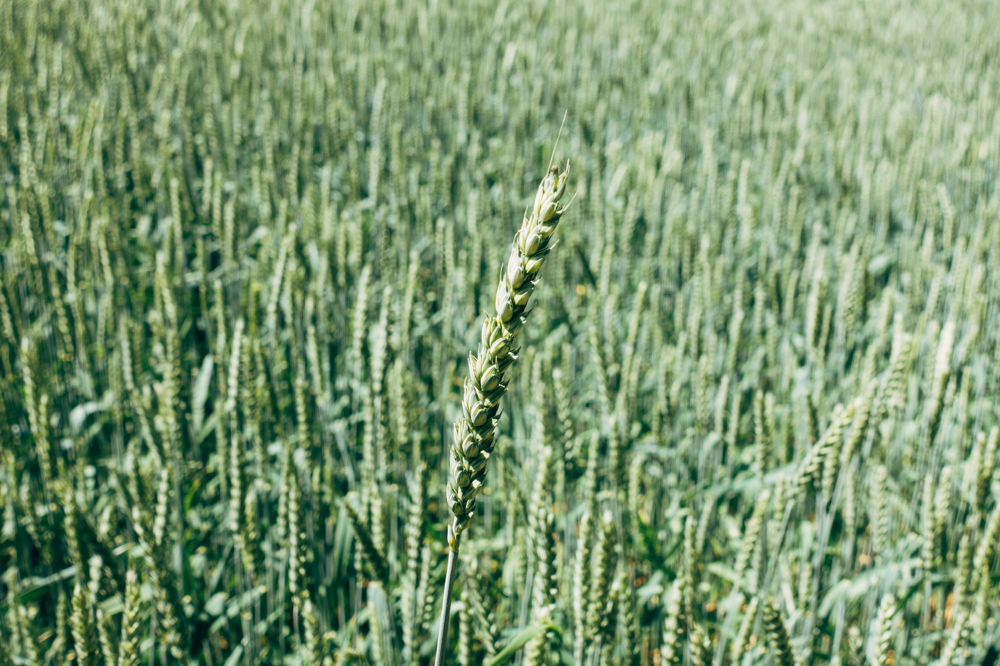

風早蒸留所の特徴
利根川から堆積した湿地・斜面を滑る風
地下から湧く水が酒の源
Barley

地元農家と協力して最高級の大麦のみを調達しています。
それは、太陽の光をたっぷり浴びた自然栽培した大麦で
Whiskyに麦本来の味を引き出します。
Pot still
スコッチの本場から学んだ製法を固く守ったハイランド風蒸留方式、
そのクオリティは本場のスコッチと言っても良いほど高い。
２回目の蒸留で、３段階のスピリッツ抽出する独特工程から生まれ、その後、樽熟成します。
Employee
シングルモルトが出来るまで１０年。生産する担当者の関係が味に反映されます。
味を守る者同士、国籍を超えて理解し合い、蒸留所内は至る所、真のウイスキーメーカー
に似合った情熱と誠実を伴うコミュニティがあります。